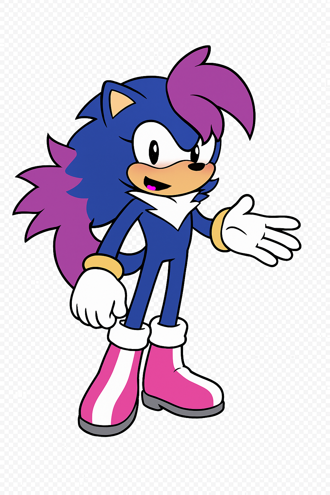

<!DOCTYPE html>
<html lang="en">
<head>
  <meta charset="UTF-8" />
  <meta name="viewport" content="width=device-width, initial-scale=1.0" />
  <title>Aurora Talking Avatar</title>
  <style>
    body {
      background: #111;
      display: flex;
      align-items: center;
      justify-content: center;
      height: 100vh;
      margin: 0;
    }
    img {
      width: 300px;
      transition: transform 0.1s ease;
    }
  </style>
</head>
<body>
  
  <script>
    const img = document.getElementById('aurora');
    const mouthOpen = 'aurora_open.png';
    const mouthClosed = 'aurora_closed.png';

    navigator.mediaDevices.getUserMedia({ audio: true })
      .then(stream => {
        const audioCtx = new AudioContext();
        const source = audioCtx.createMediaStreamSource(stream);
        const analyser = audioCtx.createAnalyser();
        analyser.fftSize = 512;
        source.connect(analyser);
        const data = new Uint8Array(analyser.frequencyBinCount);

        function detectVolume() {
          analyser.getByteFrequencyData(data);
          let sum = 0;
          for (let i = 0; i < data.length; i++) sum += data[i];
          const avg = sum / data.length;

          if (avg > 30) {
            img.src = mouthOpen;
          } else {
            img.src = mouthClosed;
          }
          requestAnimationFrame(detectVolume);
        }

        detectVolume();
      })
      .catch(err => alert('Microphone access denied or unavailable: ' + err));
  </script>
</body>
  
</html>
